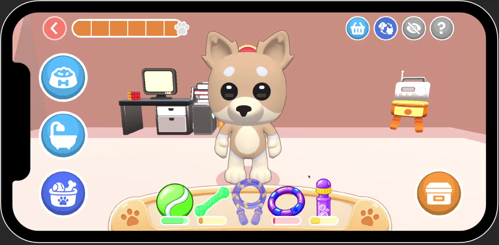
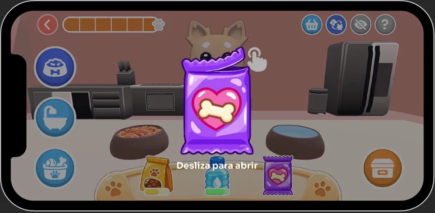

Cuidado de la mascota
PetCare
Moja el pelaje con la manguera, sirve agua en el plato o lanza una pelota. En PetCare eliges cómo cuidar a tu Yunipet y ves cómo responde a cada gesto.

Las rutinas de cuidado
La hora de comer en el prototipo

